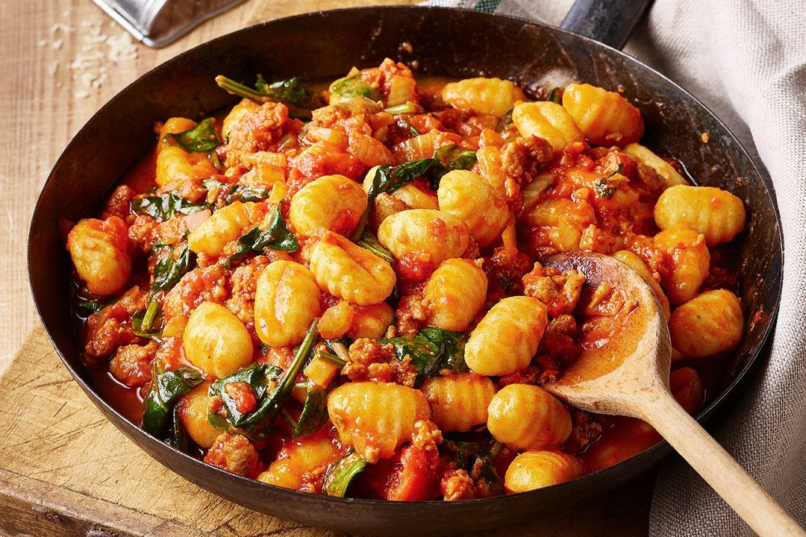

Gnocchi – ich liebe diese fluffig, leicht matschigen Mini-Klöße einfach. Sie nehmen Saucen so richtig schön auf und bringen für mich immer ein kleines bisschen Italienurlaub auf den Teller. Und das Beste: Gnocchi verlangen nicht viel. Eine einfache Tomatensauce, Pesto, Parmesan oder Butter genügen, um die kleinen Klößen aus Kartoffelteig geschmacklich abzurunden und ein Gericht zu zaubern, das (auf besonders leckere Art und Weise) satt macht. Also warum nicht mal Gnocchi selber machen?